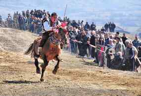
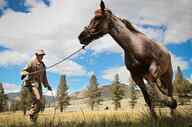
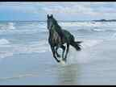
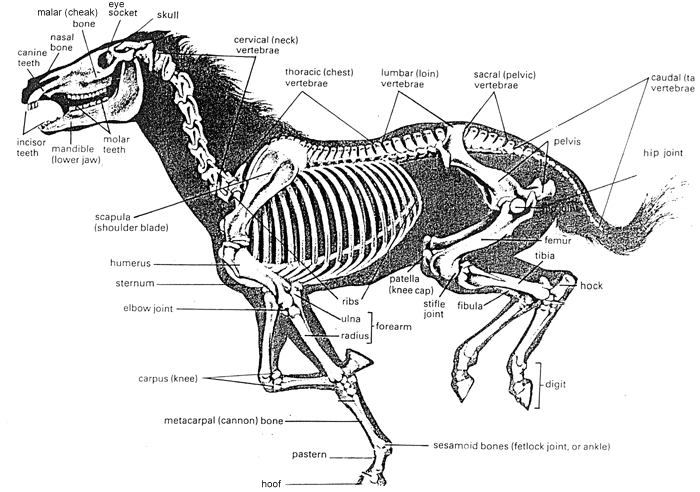
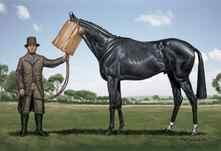

< < < Back
Behave With Girls As You Would With Horses – Return Of Kings
There are a few things that I know well. Two of them are horses and girls. Reflecting on the way men pursue women with sex or relationships as a goal and the way men tame horses, I noticed that there are eerie similarities. So here is my advice:
Apply the same behaviour with women as you would with horses and you will be more successful in your endeavours and come out a happier man.

I know some do not want to hear this, but put on your flak jacket and saddle up.
On roles and authority

– The horse has a primary function: riding. Bring it around, it comes, you ride. Then a bit of straw and see you tomorrow.
– You are the superior and dominant one, you are in charge. The horse follows your lead. You do not switch places. Science agrees.
– The male is stronger than the female. The stallion’s goal is to sire many offspring from different mares while the mare’s goal is to be fertile and take care of its progeny.
– It will test you and will sometimes refuse to follow. Pull on the tether and show who is the boss.
– Mares will excel at breeding offspring or riding. Always fit for one or the other, rarely in both.
– If it gets mad, hold tight to the rope and let it kick the air until it tires itself out. They all calm down at some point.
– Do not pass behind it carelessly or commit a mistake. You will get kicked in the groin.
– You do not say sorry to a horse. Show that you are weak or scared, it will sense it and punish you.
– You cannot reason with a horse when it misbehaves. You have to remain calm and use a combination of skills and authority.
– Never tolerate the biting. EVER. First bite if there ever is one: swift punishment then back in the line.
– They are better behaved with a bridle and a bit on.
– Always stay on your feet. Lower your guard and you will bite the dust.
– No point beating the horse with a stick or to the blood. Displaying dominance and aloofness works wonders.
– The horse supports you in your journey. You are the one with the reins, showing the path.
On riding

Tell me that this rider is not happy
– Riding horses has always been associated with masculinity.
– It is all good to observe the horse extensively, but nothing feels like riding one.
– It is much easier to sit around, look at them, and say you do not like to ride because it requires effort, than getting out there and attempt to catch them.
– Beginners fall off horses. Seasoned riders make them turn at a click of the tongue.
– When you approach, show dominant body language and no emotion. Use your voice tone to lure it in and pass the halter on its head.
– You tame a magnificent horse in its prime. It is fascinating, exhilarating. But after all, it is just a horse. Riding a beautiful horse is amazing but it is not everything there is to life.
– Give a bit of crop for the last straight line then finish strong.
– No one said that catching a fine horse would be easy. But the reward is sweet.
– If you do not ride regularly, you get rusty.
– Ride your horse often and teach it to pace its effort
– Since man became man, he has always wanted to ride the horse. Now that the engine exists, the man becomes lazy.
– The carer spends, the jockey rides.
– Loose horses never bring any good.
On relationships

– When you fall, it is on your head or your behind, rarely elsewhere. Wear a helmet and try to avoid getting your tailbone fractured.
– Everyone has fallen off his horse. The one who denies it is a liar.
– The first thing to do when you fall off a horse is to climb back up.
– Taking care of horses is a rich man’s job, often done by poor people.
– Give a carrot once in a while to reward good behaviour. It is still a being.
– Stroke it from time to time but do not translate your affection into words. It does not understand you because it is a horse. Let it neigh with its peers. Your physical touch is your medium.
– A mad horse is a danger. Get rid of it before it kicks your children in the face, damaging them forever.
– If the horse is someone else’s now, it is not your role to feed it anymore.
– Your horse ran away. Tough. Now deal with it and get another one.
– Dealing with many horses is no easy task and is an investment of time, energy and money.
On beauty

– Not every horse is special. Not every horse is beautiful.
– Only a gentle horse in good health, with well-balanced body proportions and a long, silky, natural-looking mane, is beautiful.
– Its physical shape is the index of its quality. The horse requires regular exercise and quality food.
– Sugar spoils it and is not good for its body.
– It is normal and healthy to want to ride the beautiful horse, not the mangy fat pony.
– Only fools parade around with flea-ridden, obese horses.
– Get a horse that is in its prime, not one that is old and used.
– There is a limited period of efficiency for a horse before it becomes too old.
– A lame horse is useless. People that have money to throw out the window can keep it and feed it.
On nature

– The horse will always follow the group, not questioning its direction.
– The horse runs when confronted to danger or something perceived as dangerous. It flies and does not fight. It will fight on extremely rare occasions and only if cornered.
– In the majority of cases, they are ungrateful for the care you give them.
– The horse wants to be free. You have to keep it in its paddock or it will run away.
– Compare the man who owns a lot of horses and the man who tends to them. The first one enjoys their beauty and rides them whenever he wants. The stable lad just deals with their shit, takes them for a stroll, feeds them and gives them attention. Guess how they repay him.
– The horse is a highly-social herd animal. It is not biologically programmed to be strong and independent.
– There are different breeds of horses. They have different functions and people have different tastes. A draft horse is not an English thoroughbred. It is a fact and someone that tells you otherwise is laughed at.
– Mad activists want you to think that the horse is your equal.
– The genes talk. When a horse is an idiot, high are the chances that the one before it was not the sharpest tool in the shed.
Pour finir: Cases in which these parallels do not apply
“Millennial horse”, exhibit number one
– Nature made the horse stronger than the man.
– Do not bring it around to get inseminated by a different stud every spring.
– Do not brand it with a white hot iron.
– Do not sell the offspring to the highest bidder as soon as they reach the age to be trained.
– Do not put it down if it breaks an ankle.
– Do not put a yoke on it and plow your field with it for 15 years
– A horse that has been ridden senseless is safer than one that has never been broken or ridden before.
– A large horse is usually more docile than a slender one.
– Do not let your whole family ride your horse.
There you have it. If you can think of any other, feel free to add them.
Read More: Avoid Women With Horses


{kind=link}
{kind=link}
{kind=link}
{kind=link}
{kind=link}